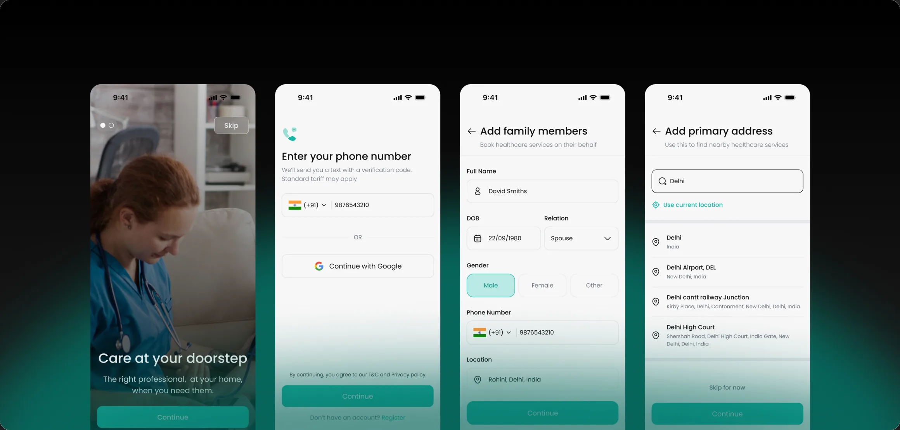
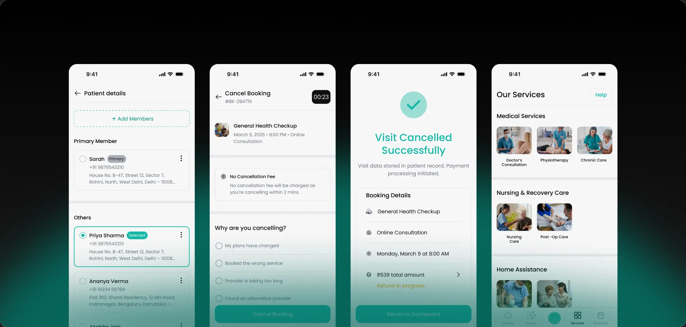
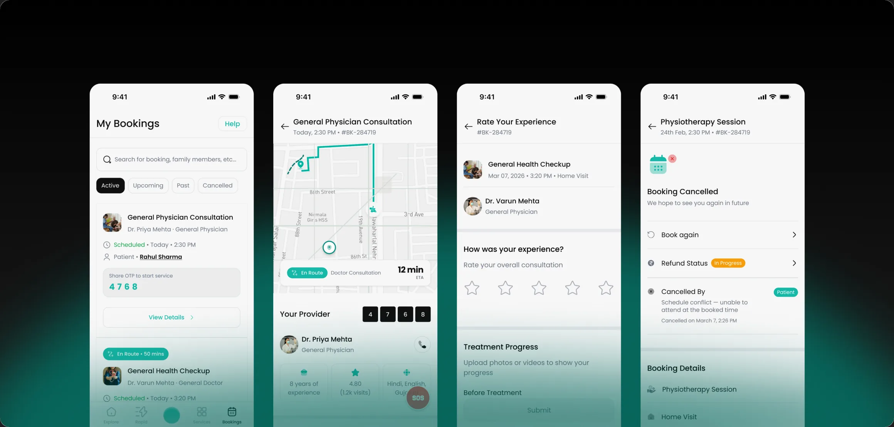
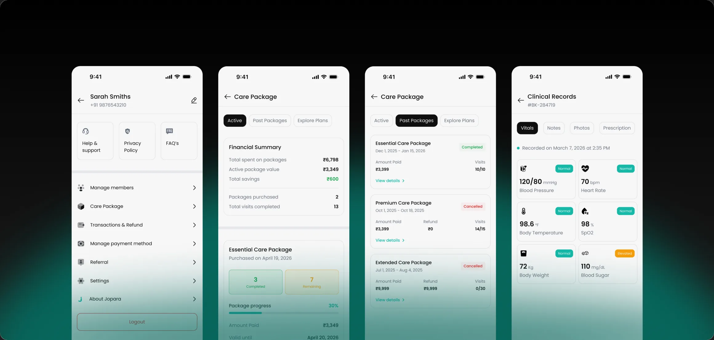
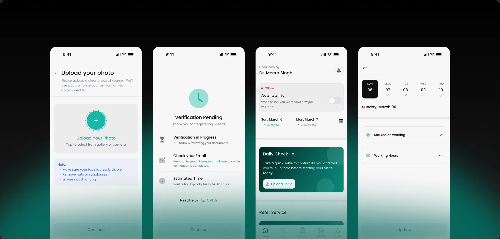
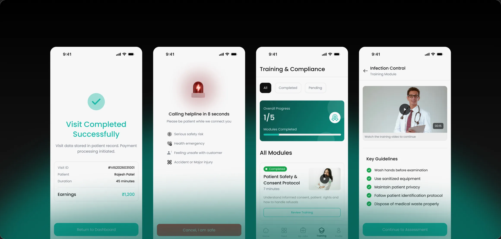
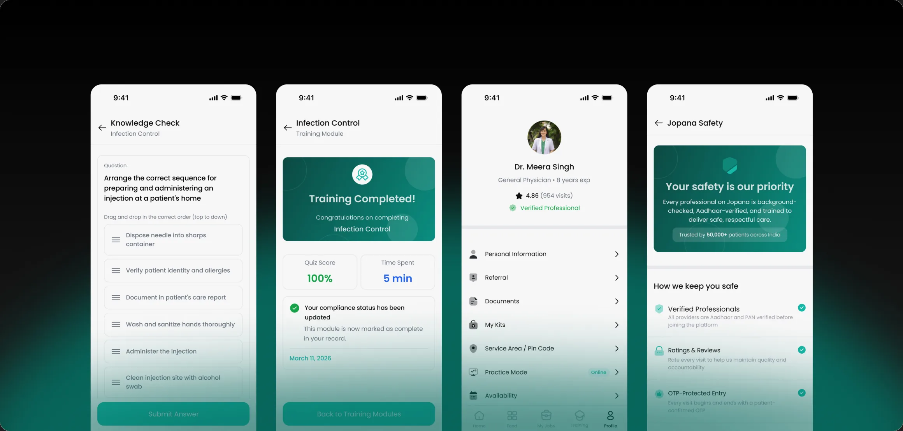
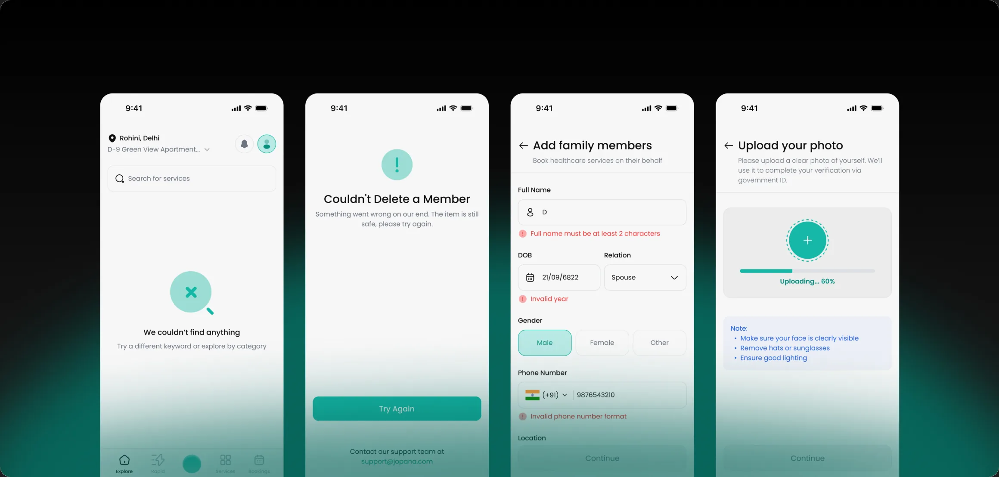

Jopana

The Problem
Jopana is one product built as two separate apps, a Patient app and a Service Partner app. Both had to work for the whole thing to work, so I designed each side around the real problem it faced.
For patients:
Getting trusted care at home is broken: long waits and crowded clinics, scattered uncoordinated providers, and no reliable way to get a verified professional to your door. For post surgery recovery, elderly parents or chronic conditions, that is a health risk, not a minor hassle. Home healthcare had no convenient, trustworthy front door, for a single visit or weeks of care.
For providers:
Skilled professionals, physiotherapists, nurses, caregivers, doctors, struggle with the business side of going independent: a steady stream of nearby patients, being trusted by strangers, and getting paid without a clinic taking a large cut. The demand existed, but no efficient, trusted way to match to it.
Why it mattered:
A marketplace only works if both sides do, the provider experience is what makes the convenience real: care that comes to you, once or on a schedule. Designing both apps was designing one loop.

Context & Constraints
Business goals:
Own the front door to at home healthcare, make booking a verified professional more convenient and more trustworthy than any offline alternative.
Support both instant (Rapid) and scheduled or recurring care across five service lines: doctor, nursing, continuous nursing, elderly care, physiotherapy.
Build reliable supply side liquidity and monetise it through a subscription + credit / lead model, partners pay to receive leads, rather than only commission per booking.
What each side needs:
Patients: convenience and certainty, care that comes to them on their terms, verified professionals above all, and one coordinated place instead of scattered contacts.
Providers: a steady flow of relevant nearby leads, control over when they are Active, clarity on pay and fees, and branding that lets a stranger open the door.
Constraints:
One shared teal design system across two separate apps: the patient and partner surfaces must feel like one brand yet read as clearly distinct products, all from a reusable, state aware component set.
Accessibility and plain language for a broad, non technical audience: legible type, clear hierarchy, generous tap targets and reassurance over medical jargon.
Sensitive medical context, HIPAA standard data handling, encryption, and Electronic Visit Verification (live location during a visit) that must feel like safety, not surveillance.
Complex pricing, night, holiday and weekend surcharges, last minute and clinical complexity rates, and package reschedule limits, made legible to a stressed customer and fair to the partner doing the hard job.

Role & Ownership
A lean two person effort, me and the company’s design lead, side by side. We built the Patient and Service Partner apps in parallel, one surface after another, so ownership was genuinely shared, not cleanly divided.
In practice I was hands on across both apps: problem framing, patient booking, Rapid and packages, partner onboarding, leads and availability, and the shared component system, iterating closely with the design lead.


Depth of Craft
Two genuinely different products for two sides, each with its own terms, lifecycle and economic model, not a mirror of the other, sharing one design system.
Service line specific patient pages rather than one generic list, a physiotherapy need and an elderly care need are framed and merchandised differently.
Patient edge cases designed, not ignored: no pro nearby, ETA and live tracking, disabled and empty states, and pricing that shows night, holiday, weekend and last minute surcharges without overwhelming.
Provider edge cases: credit running low → lead suspension; Active or inactive availability; accept or decline; verification gating before any leads flow.
Incentive design as craft: surcharge and hazard pay for night, holiday, critical, infectious and bariatric cases, so the hardest jobs still get covered.
Booking depth: single service vs packages (1 to 30 sessions), each with its own reschedule limit and a clear cancellation and refund schedule.


Process
This was a real client project. The client has spent years in the healthcare industry, so the work started from genuine domain knowledge rather than guesswork.
Grounded the model in conversations with senior doctors, pressure testing how home visits, recurring packages and clinical complexity actually work, and folding what we heard back into the flows and pricing.
Treated Jopana as two separate apps from the start, with a distinct For providers entry and its own partner terms, so neither journey was bolted onto the other.


Impact
Craft outcomes (verifiable from the work):
Two complete apps: a patient experience across five service lines (home, service pages, Rapid, booking, packages, account) and a distinct Service Partner experience (onboarding, leads, availability, credit, terms).
One consistent teal healthcare design system with a reusable, state aware component set powering both apps.
Trust, monetisation and pricing complexity made legible, verification signals, ratings, ETA tracking, transparent surcharge and reschedule rules, and credit / lead economics.
How success would be measured:
Activation: booking completion rate; time to book.
Convenience and flexibility: share of needs served across both modes, on demand visits and recurring packages.
Supply liquidity: Active professionals per area; lead acceptance rate.
Retention: repeat booking and package renewal; partner retention and churn.
Trust and quality: rating distribution, cancellation and on time arrival rates.


Decision & Tradeoff
Two separate apps, not one app with a provider mode. Trade off: more to design and maintain, but each side reads only what applies to it and neither compromises the other.
Two booking modes for patients: on demand Rapid, plus scheduled bookings and packages. Trade off: more surfaces, but it covers both a one off need and ongoing care.
Lead with trust signals everywhere, verified, background checked, ratings, uniforms, because in healthcare the conversion blocker is fear, not price.
Surface complex pricing up front, surcharges, hazard pay, reschedule tiers, instead of hiding it behind one number. It makes the UI busier and the price look higher, but hidden fees at a vulnerable moment would break the product’s core trust.

